讲座 4
- 欢迎!
- 人工智能
- Game Playing
- Decision Trees
- Minimax
- Depth Limited 搜索
- Evaluation Functions
- 机器学习
- Reinforcement Learning
- Exploring and Exploiting
- Neural Networks
- Training Neural Networks
- Natural Language Processing
- Word Embeddings
- Attention and Transformers
- Summing Up
欢迎!
- In our 上一页 session, we explored Python 编程, learning 关于 variables, types, conditionals, loops, functions, and libraries.
- This 周, we explore the fundamentals of 人工智能, the ideas, strategies, and 算法 that computer scientists have developed to build intelligent capabilities into computers.
- The goal is to help you understand what 人工智能 really is, how it works, what it is good at, and what its limitations are.
- By the end of today’s 讲座, you will have a solid understanding of the key 算法 and ideas behind modern AI systems.
人工智能
- What can we accomplish with 人工智能? There are a wide variety of different use cases.
- One of the earliest areas where computer scientists explored AI was in the 世界 of game playing, being able to train a computer to play a game well, whether it’s a simple game like tic-tac-toe or 更多 complex games like chess or Go.
- Other instances where AI has started to show up in our everyday lives include handwriting recognition, where computers are increasingly able to identify what you have written down if you write a digit or a letter.
- Computers are also good at categorizing data. For 示例, your 电子邮件 inbox. Your computer is automatically classifying some of those emails as spam and others as not spam. The computer needs to have some process to understand which emails to classify as spam.
- Other potential use cases include recommendation systems. When you’re listening to music online or watching 视频 or 电影, a streaming service might recommend 视频 that it thinks you might enjoy. There needs to be some intelligence for figuring out how to recommend something to you that you’re really going to like.
- Other use cases include text generation, with all sorts of large language models that are available now. We can provide some prompt, some input into a language model, something like “give me a three-day itinerary for a trip to Boston,” and expect that the computer is going to generate an intelligent reply.
Game Playing
- Let’s begin with game playing, one of the earliest places where 计算机科学 research in 人工智能 began.
- Games offer a bit of a simplified environment to start. Rather than deal with the complexities of the real 世界 where there is so much uncertainty and variables, games offer a place where there is usually a very fixed set of rules, very clear constraints that are easy for computers to work with.
-
Consider this breakout-style 视频 game where you’re trying to bounce this ball to hit these objects at the top of the screen:
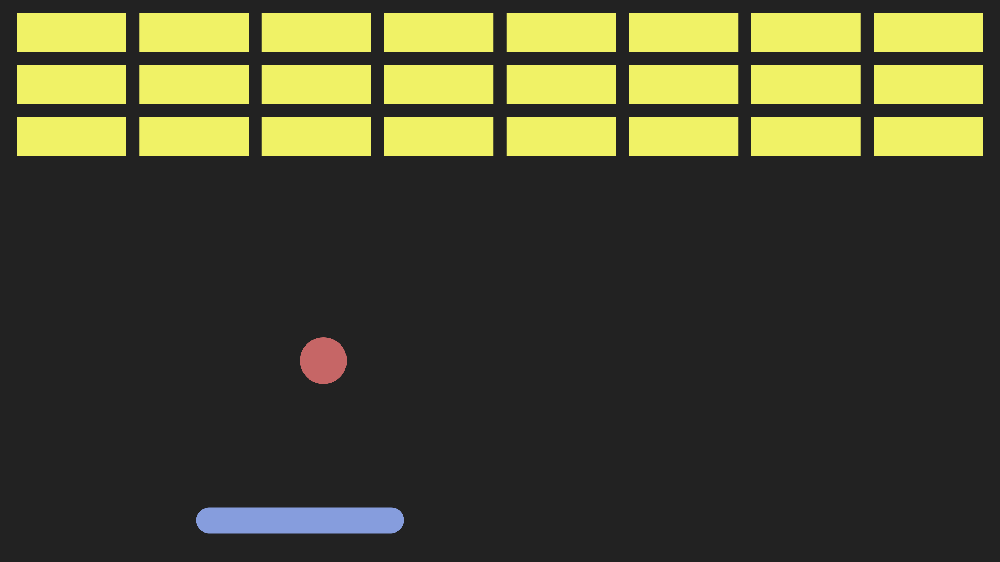
- What would it take to program a computer to play this game well? The computer is going to take some action in response to things happening in the game.
- Imagine what would happen if the ball moved to the left. What action do we want the computer to take? We want the computer to move the paddle to the left in order to catch the ball, to make sure we can bounce it and it doesn’t 秋季 to the bottom of the screen.
Decision Trees
- We could try imagining encoding that information in a structure that allows us to make decisions by asking 问题 and telling the computer to make decisions based on the 答案 to those 问题.
- To get the paddle to move to the left, we might start by asking a 问题: is the ball to the left of the paddle?
- Depending on whether the 答案 is yes or no, we might make a decision 关于 what to do 下一页. If the 答案 is yes, then we should move the paddle to the left.
- If the 答案 is no, we might ask a follow-up 问题: is the ball to the right of the paddle? If yes, we should move the paddle to the right. If no, then we don’t need to move the paddle at all.
- The advantage of structuring our decision-making process like this, asking 问题 and making decisions based on the 答案, is that we can relatively easily convert this idea to code.
-
The pseudocode might look a little something like this:
while game is ongoing if ball is to the left of paddle move paddle to the left else if ball is to the right of paddle move paddle to the right else don't move paddleNotice the step-by-step process: while the game is ongoing, we repeat the decision process again and again.
Minimax
- Let’s take a different game now, the game of tic-tac-toe (or noughts and crosses, depending on where you’re from).
- The idea of tic-tac-toe is that there are two players, X and O. X and O take turns, placing Xs and Os in one of the nine cells of a three-by-three grid. The goal for each player is to get three in a row, either vertically, horizontally, or diagonally.
- Imagine we are playing as X. If on our turn there is a way to get three in a row, then we should make that move and win. But what if we cannot win immediately? If we’re being careful, we might notice that O is 关闭 to getting three in a row themselves. We should block them.
- We might ask: can X win on this move? If yes, play in the spot that lets us get three Xs in a row. If that’s not true, can O win on their 下一页 move? If yes, play in the spot that blocks them.
- But what if neither is true? Now it gets 更多 complicated. It might not be immediately obvious what the right decision is. A lot of what 人工智能 is all 关于 is not just us telling the computer exactly what to do, but giving the computer the 工具 it needs to figure out on its own what the right decision is.
- The algorithm we’re going to use for game playing is called Minimax. How does Minimax work? Computers ultimately represent things in terms of numbers. If we want a computer to play a game well, we need to take this concept of a game and turn it into numbers.
- As far as the computer is concerned, there are only three outcomes of tic-tac-toe that we really care 关于: O wins the game, the game is a tie, or X wins the game.
-
We assign a number to each outcome. O winning has a value of negative one. X winning has a value of positive one. A tie has a value of zero.
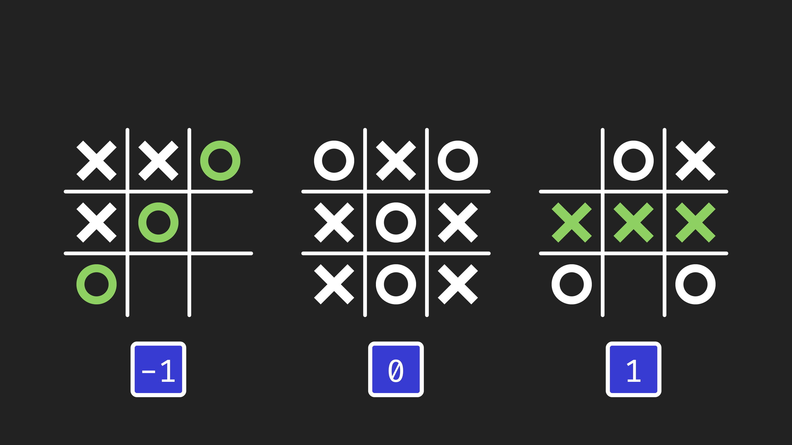
- Once we put numbers to each of these possible outcomes, we can define what the goal for each player is.
- The X player, who we call the max player (the maximizing player), their goal is to maximize the value of the game. They want the value to be as high as possible. One would be best, meaning X wins. Zero, a tie, is still better than negative one.
- The O player, who we call the min player (the minimizing player), their goal is to minimize the game value. They want negative one, meaning O wins. If that’s not possible, tying is still better than X winning.
- Let’s imagine how we could use these values to evaluate what moves to make. Here is a game board that is not yet over. Let’s say it’s O’s turn.
- We want to figure out: if both players are playing optimally, making the best decisions at any given point, what will the value of the game ultimately end up being?
- O has two options. Minimax will consider both of those options because we need to consider all possible moves to decide which is best.
-
For each option, we explore what will happen. If one option leads to X winning (value 1) and another leads to a tie (value 0), the O player, being the minimizing player, will choose the option with the lower value: the tie.
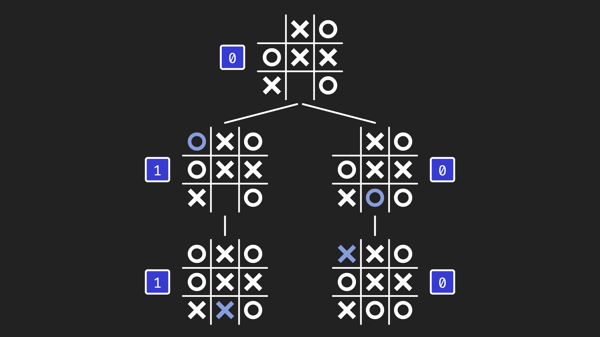
- The algorithm considers all possible moves and responses to determine the optimal play.
- This game state also has a value of zero, meaning if both players play optimally, the game will end in a tie.
- We did this for a position that was two moves from the end, but you could do this at any point in the game. Always consider what all your possible moves are. For each move, what is your opponent’s best response? For each of those, what is your best response? And so on, calculating all the possible ways the game could go, then making a decision based on which has the highest or lowest value.
Depth Limited 搜索
- This Minimax algorithm can be used to optimally play tic-tac-toe. If you use this algorithm, you will never lose a game of tic-tac-toe.
- But what if we tried to apply this to other games? Tic-tac-toe is relatively simple. Imagine a much 更多 complex game like chess, where there are 更多 pieces, 更多 squares, 更多 possibilities.
- Could you use Minimax for chess? In theory, yes. But in practice, the challenge is there are just so many 更多 possibilities for how a game of chess can go that it’s difficult to calculate all of them.
- For just the first move in tic-tac-toe, there are nine choices (nine squares). In chess, there are 20 different options for the first move.
- After two turns in tic-tac-toe, that’s 9 times 8, giving us 72 possibilities. In chess, 20 times 20 gives us 400 possibilities after just two turns.
- Those possibilities compound exponentially. After nine turns, the game of tic-tac-toe is over with 关于 260,000 possibilities. In chess, we’re looking at something like 2.4 trillion possibilities with many 更多 turns to play.
- 260,000 possibilities, a fast computer can get through in a matter of seconds. Whereas in chess, even with all the 时间 in the 世界, it’s not enough to explore every possible game.
-
One possible choice is to take a depth-limited approach. Don’t explore the entire chess game to the end. Only look a certain number of turns ahead, maybe five or six or seven turns, for 示例.
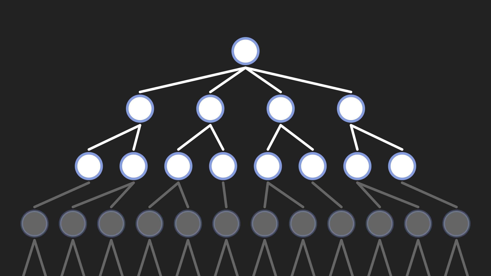
- Only a portion of the tree is explored, with gray nodes representing unexplored possibilities.
- This allows us to limit the number of possibilities we need to explore.
- In 人工智能, often even though we could find the best solution by trying all possibilities, we need to consider not just making a good decision, but making a good decision efficiently in a way that we’re actually able to have enough 时间 to make that decision.
Evaluation Functions
- What do we need to change 关于 this algorithm when using a depth-limited approach?
- Before, when we played tic-tac-toe to the end, we could evaluate who won and assign a value. In chess, if we’re only looking a certain number of turns ahead, we might not have reached the end of the game. We don’t yet know who will win.
- We need to make some prediction as to what we think the state of the game is going to be, who we think the winner will end up being, whether the white player or black player is doing better.
- Often what we use for that is something called an evaluation function.
- A function in 计算机科学 is something that can take in some data as input, process that input, and produce something as output. Our evaluation function is going to take a state of the game as input and output a prediction for what we think the value of that game is going to be.
- There are different approaches for constructing that evaluation function. Maybe you look at how many pieces the white player has versus how many pieces the black player has. Maybe you look at the positions of those pieces.
- There are also ways that we might be able to train a computer to estimate what we think the evaluation of a particular game state is.
- This is going to help us make a decision as to which of these states we think is better than others, allowing us to decide what the right move is.
机器学习
- This might be similar to how you might imagine learning to play a game: if given the rules, you could sit down and figure out your strategy.
- But another way that we get good at things is by learning. You try something, you experience it, and from that experience, you learn. If you do something well, you learn to do 更多 of that in the future. If you do something poorly, you learn to do 较少 of that and learn from your mistakes.
- One idea is to encode that same possibility for computers as well, to allow computers to learn from experience.
- The idea of computers learning is this general area called 机器学习.
Reinforcement Learning
- 更多 specifically, what we’re interested in here is a form of 机器学习 called reinforcement learning.
- Reinforcement learning is all 关于 computers learning from experience. You start with a computer that’s not good at performing some task, and through experience, the computer gets better at performing that task.
- Imagine we have a grid, a maze that we want a computer to navigate. Some cells are walls we don’t want the computer to crash into. We have this computerized AI agent down here trying to get to a goal over there.
- Imagine initially our agent doesn’t know how to navigate. It doesn’t know where the walls are. It doesn’t know what action to take depending on what square it’s in. But it needs to find its way to the goal.
- If it starts with no knowledge, the best it can do is try something at random. Maybe we try to go right and crash into a wall. That didn’t turn out well.
-
We go 返回 to the beginning, but we can learn from that experience. The computer learns that 下一页 时间 in this state, you shouldn’t go right, because it didn’t work out last 时间.
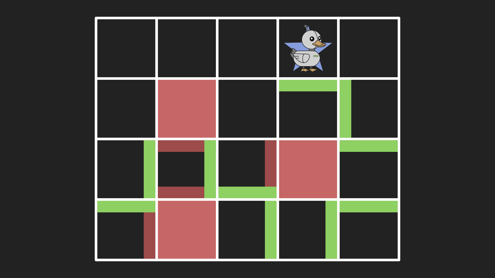
- The agent learns the path through trial and error.
- 下一页 时间, we learn to try something different. We’re in a new state we haven’t experienced before. We might try something at random. Maybe we crash into another wall. Now we’ve learned from that too.
- We repeat that process through trial and error. Every 时间 we fail, we learn from that experience. We learn not to do that again.
- Eventually, our agent might find a way to navigate the grid and reach the goal. Once we’ve achieved that goal, we learn from that success too. We’re not just learning from mistakes, we’re learning from successes as well.
- In future iterations, we can say we know a sequence of actions that works well. We can follow that same sequence because we know it worked last 时间.
Exploring and Exploiting
- One thing you might notice is that although we found a way to get to the goal, we didn’t necessarily find the fastest way. There might have been a faster path.
- But we won’t be able to find that now because we’ve found a path that works, and we’ve trained ourselves to follow it.
- Often in reinforcement learning scenarios, we have to balance between two competing priorities: exploring and exploiting.
- On one hand, we want to exploit our existing knowledge. If we know a sequence of actions that works, we want to use that knowledge because we know it leads to good outcomes.
- On the other hand, we also sometimes want to explore new states, use new actions we haven’t tried before, because maybe they’ll lead to something even better.
- Computers need to balance between these priorities when learning something new.
- You and I engage in this process every day. If there’s a restaurant you really like and you’re deciding where to eat, on one hand you want to exploit your existing knowledge: you know you’ll have a good 时间 there. But on the other hand, you might want to explore, try something new, because maybe you’ll like it better.
- The right strategy is often not always doing one or the other, but a mix of both: sometimes trying new things that might work out, sometimes taking advantage of knowledge you already have.
- One use case for reinforcement learning is recommendation systems that recommend music you might like or 视频 you might enjoy. These websites give you 视频 to 观看, and they recommend 视频 they think you’ll like.
- If a website recommends a 视频 and you choose to click on it and 观看 it, the website can learn from that success. It recommended something successfully. It can learn to recommend 更多 of that in the future.
- On the flip side, if they recommend a 视频 and you choose not to 观看 it, the recommendation system can learn from that failure too. It can learn to recommend fewer of those things in the future.
- Learning from its own experience makes the system better at producing results you might want.
Neural Networks
- One of the most popular 工具 in 人工智能 and 机器学习 is the idea of a neural network.
-
Neural networks are inspired by the human brain. The human brain consists of neurons that are connected to each other, passing electrical signals from one to another.
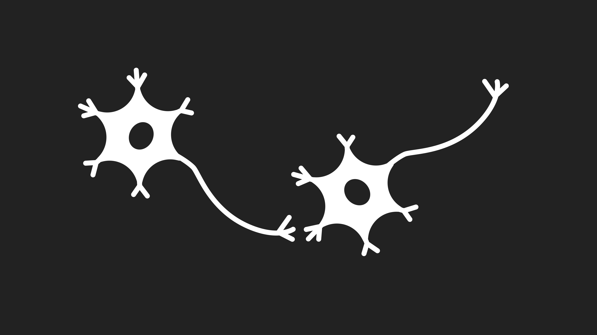
- Neurons pass electrical signal from one to another through connections.
- If one neuron gets enough electrical signal, it can activate or fire, triggering another electrical signal to pass on to another neuron through a chain of connected neurons.
- Just like we were inspired by the way humans learn to come up with reinforcement learning, we might also be inspired by the structure of the human brain to imagine what it would take to make an artificial, computerized neural network.
-
Instead of biological neurons, we have artificial neurons, which you can think of as just a unit that stores some value, like how a neuron stores electrical energy. These neurons are connected to each other, able to pass their values from one to the other.
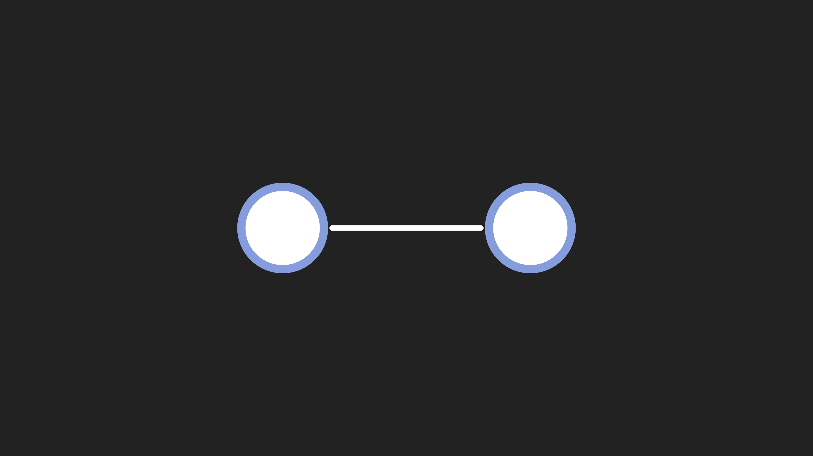
- What is a neural network actually doing? You can think of a neural network as essentially acting like a function. It takes input and produces output.
- Our neural network takes input values and tries to produce one value as output. What the neural network learns to do is transform these inputs into that output for almost any task we might imagine.
- There are a variety of things you might try to predict. Maybe you work in a business and want to predict what your sales will be based on advertising spend. Maybe you’re trying to predict whether it’s going to rain based on humidity and pressure.
Training Neural Networks
- If you just created a neural network and told it to predict whether it’s going to rain based on humidity and pressure, initially it would have no way of knowing what the right 答案 is.
- What we do with the neural network is train it with data. If you gave the computer data of many days in history, telling the computer on each day here was the humidity, here was the pressure, and this is whether or not it rained, then the computer can learn via this neural network architecture how to compute that output based on the inputs.
- What does that math actually look like? Each input has a value: we’ll call them X and Y. The neural network learns parameters, specific values the computer learns to work with.
- We learn one parameter, A, associated with the first input. We learn another parameter, B, associated with the second input. We also learn a third parameter, C, that’s not associated with any input: general information 关于 likelihood.
- The neural network multiplies each input by its corresponding parameter, otherwise known as a weight. We multiply A by X and B by Y, add those together, then add parameter C, often called a bias. Then we perform a comparison: is this value at least zero? If yes, one category. If 较少 than zero, another category.
- Depending on the values of A, B, and C, that determines what output we get for any input. That’s what a neural network learns: what numbers to use for A, B, and C that allow this equation to do a good job of predicting.
- Initially, these values start randomly. They won’t do a good job. But as we add data, we can learn from each additional data point. We try to predict, and make adjustments to the values to make predictions 更多 accurate.
- That’s why companies building 机器学习 models care so much 关于 having 更多 data. The 更多 data you have, the 更多 you can refine what neural networks learn, doing a better job of making predictions.
- Every 时间 we get a new piece of data, if we classify it wrong, we learn what adjustments to make to allow it to do a better job of classifying in the future.
-
As we deal with 更多 complex data, this representation starts to look 更多 complicated. Imagine we wanted to solve handwriting recognition. Here’s a handwritten digit in a 4-by-4 grid of pixels.
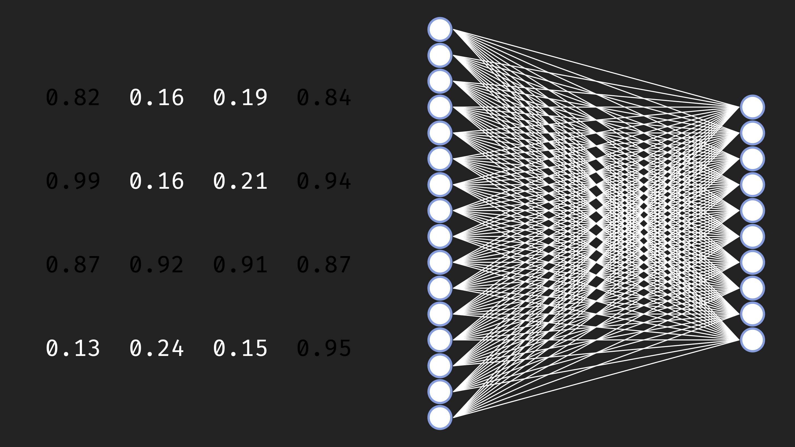
- Each pixel can be represented as a value describing how light or dark it is. How could a computer learn to classify this as the digit 4?
-
We construct a neural network with not 2 inputs but 16 inputs, one for each pixel value. If we’re classifying digits, we might have 10 outputs: is it a 0, 1, 2, 3, 4, 5, 6, 7, 8, or 9?
- When the neural network has many 更多 parameters, it learns to take pixels as input and classify them.
- As we add larger data, we might make modifications to this architecture. Often neural networks have multiple different layers doing multiple kinds of transformations.
- But ultimately the idea is the same: the neural network learns a function that takes input (all the pixel data) and produces an output (a prediction). Initially it’s not good at this, but via training it learns what values to use for all these connections to predict effectively.
- This is similar for any classification task. Spam 电子邮件 classification also takes input data (an 电子邮件) and tries to predict: is this spam or not?
Natural Language Processing
- To classify emails, we need some understanding of natural language. Getting the computer to work with natural language is complicated because language is inherently ambiguous. Words have multiple meanings. There are different ways of saying the same thing.
- If we want the computer to understand English, we need strategies for figuring out how a computer can do that.
- One of the first is figuring out how to take words and translate them into numbers. Remember that computers ultimately work with numbers. If we want the computer to understand words, we need some way to translate those words into numbers.
- One way would be to take every word and give it a number. The word “你好” could be number one. “Cat” could be number two. “Computer” could be number three.
- But it’s difficult to encode the entire meaning of a word in just a single number. A single number can only represent one thing.
Word Embeddings
- Instead of using a single value, we use what we call a distributed representation. Instead of representing a word with one value, we represent the word with multiple values.
-
Here we represent the word “你好” with five different numbers. In practice, it might be 更多 than five. Every word is associated with a different sequence of numbers, a different vector of numbers. The word “cat” is associated with a different sequence of values, and “computer” with a different sequence as well.
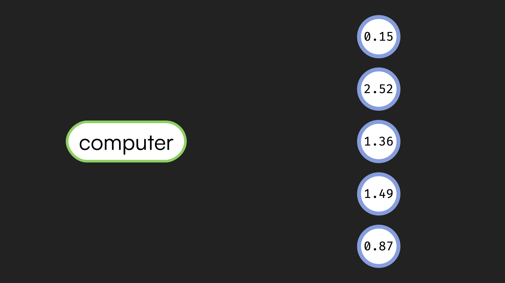
- In this case, the word is mapped to multiple numerical values.
- What do these numbers actually mean? Ultimately, they have meaning in relation to each other. On its own, one particular set of numbers doesn’t mean much, but it means something when you compare the meaning of that word with the numbers representing the meanings of all other words in your vocabulary.
- You can imagine plotting all of these representations, which we call embeddings. An embedding is the numeric representation for the meaning of a word. We could plot all those embeddings on a graph.
-
What we hope to find is that words with similar meanings end up being located in similar places when we plot their embedding values.
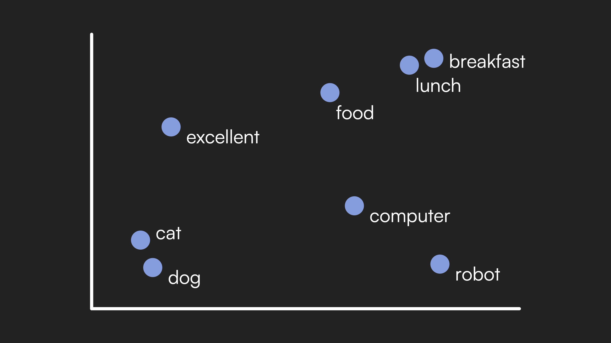
- “Cat” and “dog” cluster together, and “breakfast” and “lunch” cluster together, while they’re far from each other.
- “Cat” and “dog” are similar words, so they should have embeddings that are reasonably 关闭 to each other, definitely different from “breakfast” and “lunch.”
- How does a computer know that two words have similar meaning? One way is based on the context in which a word appears. The idea is that if a word shows up in a similar context to other words, those words probably have a similar meaning.
- For 示例: “For blank, she ate.” We could fill in “breakfast,” “lunch,” or “dinner.” Because these words can all appear in a similar context, we might conclude they have similar meanings.
- Whereas “for excellent, she ate” doesn’t make sense. That tells us “excellent” has a very different meaning than words like “breakfast” and “lunch.”
- If you give a computer a large amount of training data, a whole bunch of text, the computer can learn what words tend to appear in what contexts and use that to figure out what words have similar meanings.
Attention and Transformers
- Using this approach, we can assign each word an embedding, a sequence of values representing the meaning of that word, and use that as input to a neural network that processes language.
- But to do that well, the meaning of a word often depends on the words that appear around it. Knowing what word comes 下一页 in a sequence depends on understanding not just an individual word, but how those words relate to each other.
- Imagine we were trying to predict the 下一页 word in a sequence. This is exactly what large language models are doing. You ask a large language model a 问题, and it predicts the first word of the 答案, then uses that to predict the second word, then the third, one word at a 时间, generating what it thinks the likely response is.
- Given a sequence of words, how would you predict what comes 下一页? You would focus on particular words in the sequence that are helpful for making that prediction.
- Consider a passage from Alice’s Adventures in Wonderland. To predict the 下一页 word, you might notice the word immediately before is “golden.” You might notice other clues: something she tried, a door involved, some locks. Earlier, another reference to “golden” described a “key.”
- All those clues allow you to reach the correct conclusion that the 下一页 word is “key.”
-
How did you figure that out? By understanding the passage in context, and by paying attention to clues that allowed you to figure out the 下一页 word. Not every word was useful, but some words were useful, and you paid attention to those.
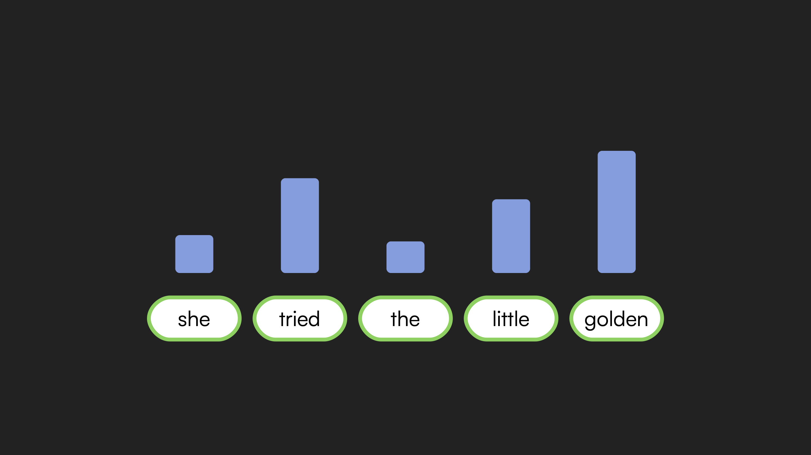
- Different words receive different levels of attention based on their relevance to prediction.
- One of the key innovations in natural language processing is building attention into computer models too.
- One of the most popular architectures nowadays is the transformer architecture. The transformer architecture is built upon this idea of attention. To predict the 下一页 word in a sequence, we allow the meanings of words to be updated based on other words in the sequence by paying attention to words that are particularly relevant.
- Given a sequence of words, a transformer architecture will look at the sequence and calculate what words should we be paying attention to. We calculate an attention score for each word that came before in order to figure out what to pay attention to, increasing the likelihood of predicting the 下一页 word.
- When you give a transformer architecture, a large language model, a whole bunch of training data, what is it learning? It’s learning how to do this attention process, how to figure out what words to pay attention to in order to give it the best chance of predicting the 下一页 word.
- We train it like our other neural networks: when we predict a word correctly, we learn from that. When we get it wrong, we figure out how to adjust the weights, adjust the parameters to do a better job in the future.
Summing Up
In this lesson, you learned the fundamentals of 人工智能. Specifically, you learned…
- 关于 人工智能 and its wide variety of use cases, including game playing, handwriting recognition, spam classification, recommendation systems, and text generation.
- How games offer simplified environments for AI research with fixed rules and clear constraints.
- 关于 decision trees as a way to structure decision-making by asking 问题 and making decisions based on the 答案.
- How the Minimax algorithm assigns numerical values to game states and allows computers to play games optimally by maximizing or minimizing those values.
- 关于 depth-limited 搜索 as a way to handle complex games like chess where exploring all possibilities is impractical.
- How evaluation functions predict the value of game states when we cannot calculate to the end of the game.
- 关于 reinforcement learning, where computers learn from experience through trial and error.
- 关于 the balance between exploring new possibilities and exploiting existing knowledge.
- How neural networks are inspired by the human brain and learn to transform inputs into outputs through training.
- 关于 word embeddings as distributed representations that capture the meaning of words in relation to each other.
- How attention and transformer architectures allow computers to understand language by focusing on the most relevant words when making predictions.
See you 下一页 时间!